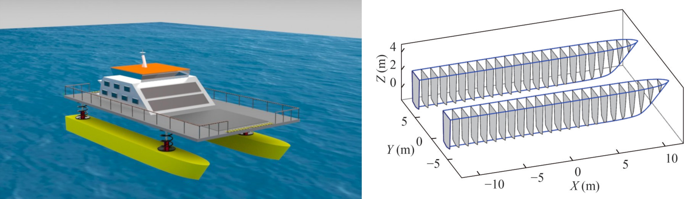

Influence of key design parameters on the stability of suspension ships

Abstract
This study presents a stability analysis of suspension ships, with a specific focus on assessing how the key design parameters influence the ship’s stability. These parameters include the total mass, mass ratio, beam of ship, spring stiffness, allowable travel, and ride height of the suspension system. The stability analysis is performed based on a hydrostatic force model and a static analysis model including the suspension deflection induced by ship inclination and load variations on the cabin. The present numerical method is verified by a sensitivity study of hull surface discretization and comparisons of the initial and intact stability obtained using Orca3D. Numerical results show that the coupling effect of the heeling and trimming occurs when the total mass of the suspension ship exceeds a critical value. An increasing mass ratio significantly reduces the righting arm (GZ) and increases trim, while spring stiffness, allowable travel, and ride height have relatively less influence on the initial and intact stability of the suspension ship. The proper total mass of the investigated ship is suggested to be 95 to 125 tonnes based on the International Maritime Organization (IMO) intact stability resolution and total mass threshold defined in this study. A dynamic stability analysis based on IMO weather criterion indicates that the mass ratio should not exceed 0.75. In damaged conditions, flooding can intensify heel-trim coupling due to the added weight of floodwater, further deteriorating the ship’s damage stability. This study provides new insights into the stability characteristics of suspension ships, highlighting the effects of suspension parameters that differentiate suspension ships from conventional ships.
Read the published article ↗